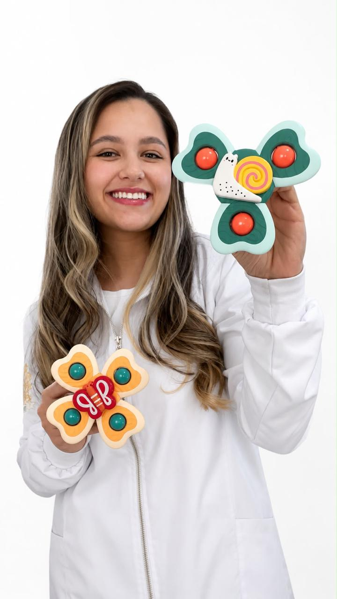
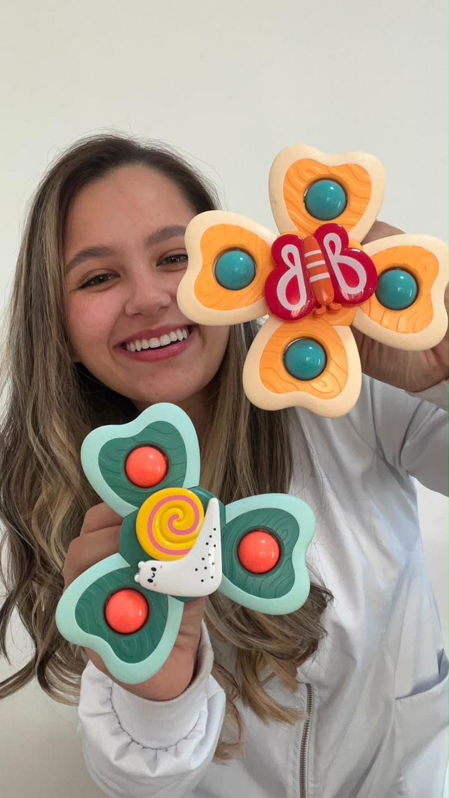

Fisioterapia pediátrica com técnica, ciência e muito afeto, acompanhando de perto cada conquista do desenvolvimento motor do seu bebê, sempre em parceria com a família.


Cada bebê é único, e o cuidado com ele também precisa ser. Enxergo a fisioterapia pediátrica como um encontro entre ciência e afeto: avalio, escuto e acompanho cada família de perto, respeitando o tempo e as particularidades do desenvolvimento de cada criança.
Cada fase do desenvolvimento do seu bebê é uma janela de oportunidade única.
Intervenção precoce que acompanha as janelas naturais do desenvolvimento motor.
Cada família é ouvida com atenção antes de qualquer plano de cuidado.
Sessões pensadas como brincadeira, do jeito que o bebê aprende melhor.
Evolução registrada e compartilhada com a família a cada etapa.
Escolha o formato que melhor se encaixa na rotina da sua família.
Cuidado pensado para cada fase e necessidade do desenvolvimento infantil.
Acompanhamento das etapas do desenvolvimento, como rolar, sentar, andar entre outras.
Intervenção nos primeiros meses de vida para potencializar o desenvolvimento.
Avaliação e tratamento de assimetrias posturais e cervicais do bebê.
Acompanhamento de assimetrias cranianas com orientação especializada.
Estímulo individualizado para crianças com atraso no desenvolvimento.
Acolhimento e orientação prática para o dia a dia com o bebê.
Fale diretamente pelo WhatsApp e receba um retorno rápido, ou use os contatos abaixo.